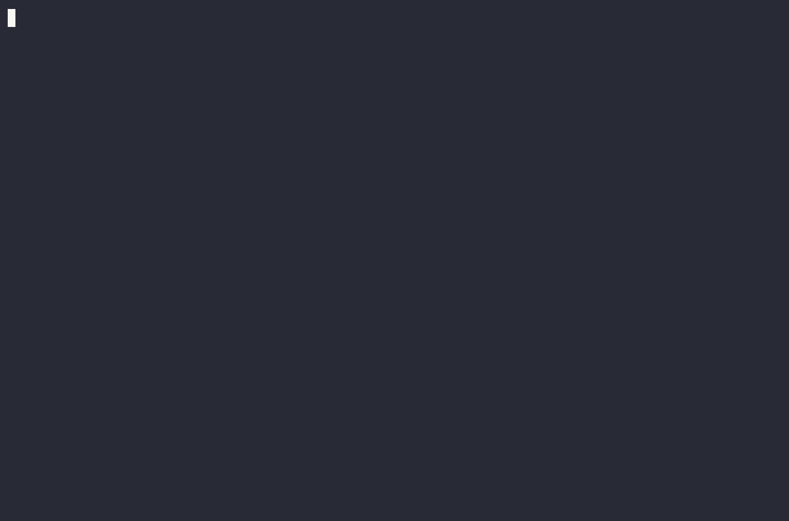
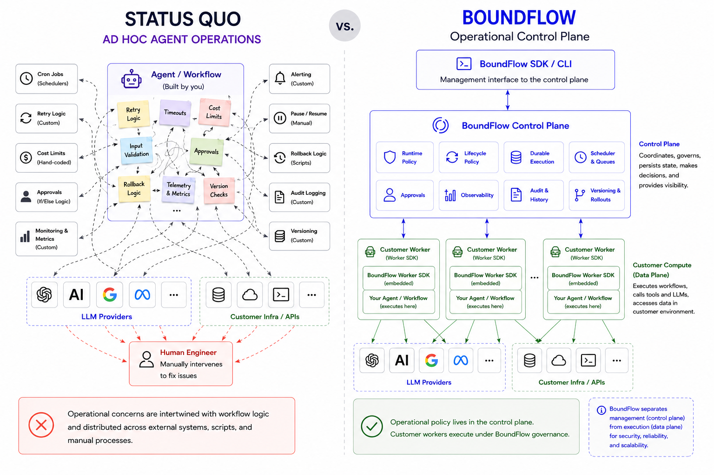

self-hosted or managed
The open-source control plane for operating AI workflows in production.
Think Kubernetes for agents and workflows. BoundFlow schedules, governs, and audits every run, so operational policy lives in the control plane, not hand-coded into every agent you build.
# Define a governed workflow @worker.workflow("refund", version=1) async def refund(ctx): await ctx.run_agent(analyst) return AwaitApproval( on_approve=Next("issue_refund"), on_reject=Complete(), justification="Approve $5,000 refund?", ) # Govern it from the control plane await cp.set_workflow_lifecycle_policy(wf.id, [ WorkflowRule( metric=WorkflowMetric.COST, threshold=5.00, action=SetVersion(target=1), ), ])
what it does
What makes an agent hard to run unattended?
Non-determinism is what makes agents powerful, and risky the moment no one is watching every run. BoundFlow turns each of three operational concerns into policy, enforced by the control plane instead of exception code scattered across every agent.
Runtime Governance
Guardrails enforced live, mid-run: per-run cost caps, tool-call limits, token and latency ceilings, and model selection. Every execution is validated against policy before it proceeds.
max_cost_usd · max_llm_calls · tool_call_limits
Lifecycle Management
A workflow reacts to its own runtime signals over time: switching models, cooling down, pausing, or rolling back to a known-good version, without manual intervention.
SetModel · Cooldown · Pause · SetVersion
Durable Execution
Runs are checkpointed and leased across a fleet of workers; if one crashes, another resumes where it left off. Each operation returns one of a small, fixed set of outcomes; gated ones park and resume server-side.
Complete · Next · AwaitApproval · AwaitInput
BoundFlow is not a prompt framework, an inference provider, or an agent-builder. It is the operational layer around the agents you build.
Every runtime decision and lifecycle action (who or what made it, and why) is written to a durable, queryable audit log, not scattered across application logs.
self-healing lifecycle
Workflows that heal themselves.
BoundFlow evaluates each workflow's own signals, such as cost, failures, and approval rejections, against its lifecycle policy, and acts when a threshold is crossed: roll back to a known-good version, pause, or cool down. No human in the loop.

architecture
Control plane and data plane, separated.
The BoundFlow backend is the control plane; workers run the agents in your own environment, with your own inference keys. It separates what an agent does from how it's operated in production. The backend schedules, dispatches, governs, and audits every run, and never sees your keys or your inference traffic.

Backend
Open source (Apache-2.0), self-hostable as a single container.
Python SDK
Open source (MIT). pip install boundflow.
Bring-your-own inference
Agents call the model with your key, in your worker. The backend never pays for tokens.
who it's for
Teams running agents unattended, past the demo stage.
You run LLM agents in production without a human watching every run, and something has already gone wrong, or you're waiting for it to.
You've hand-coded budget checks, retry limits, or approval flows into your agents, and want them declared as policy instead of scattered exception code.
You need an audit trail of every approval and policy decision, not something stitched together after an incident.
cloud · early access
Prefer not to run the control plane yourself?
BoundFlow Cloud is an early-access managed deployment of the control plane:
same gRPC API, same pip install boundflow SDK. Inference stays
bring-your-own; only the control plane is hosted. Early and
design-partner-oriented while the first users onboard.
contact
Let's talk about how you're running agents today.
We're working closely with a small group of early adopters and design partners as we head toward 1.0. If that's you, we'd like to hear from you.